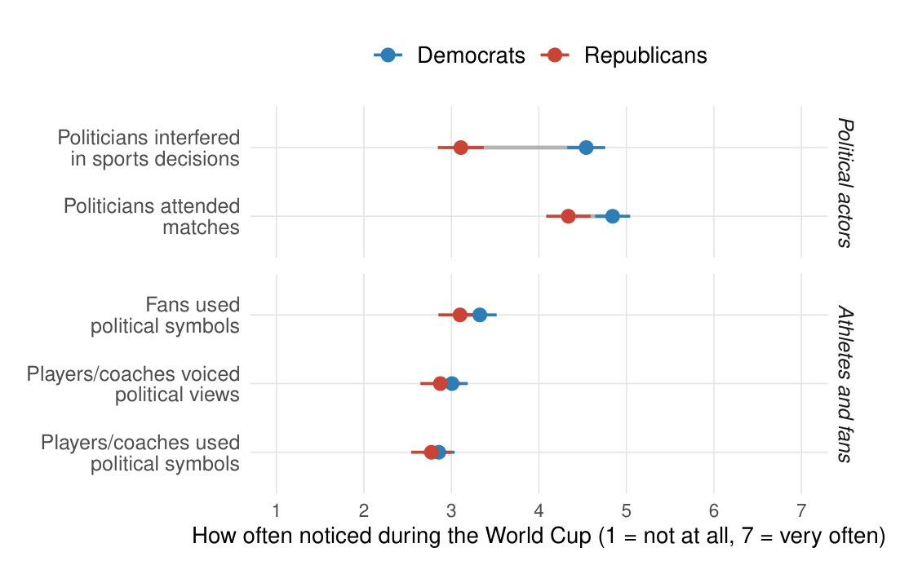
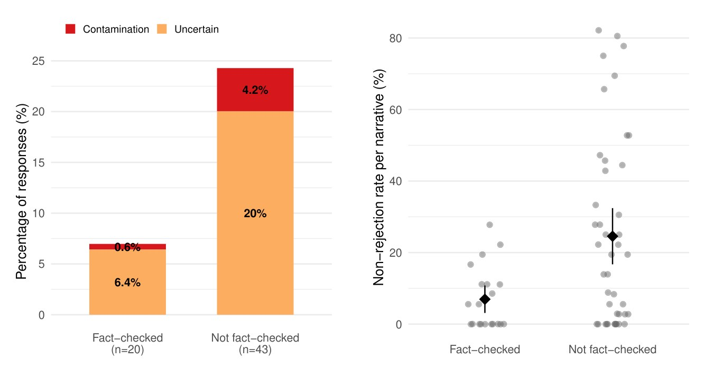
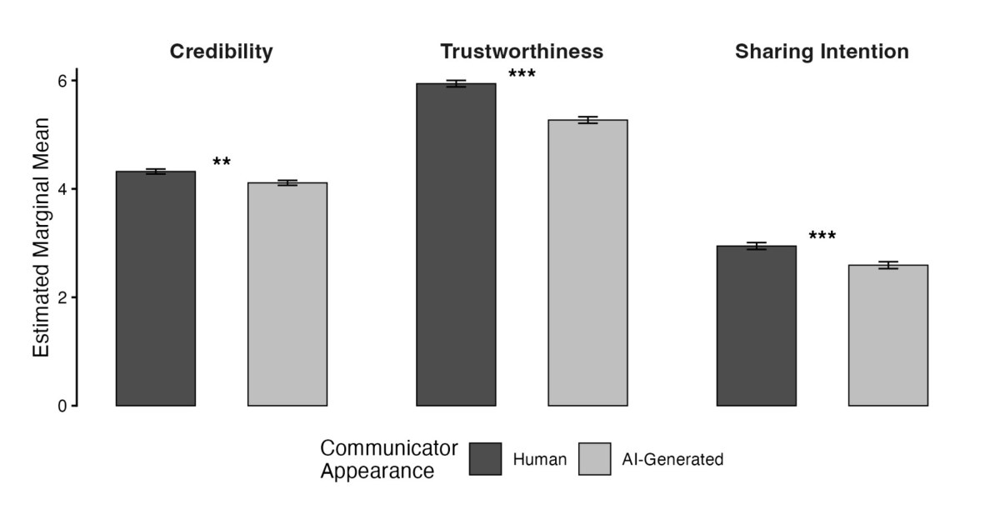
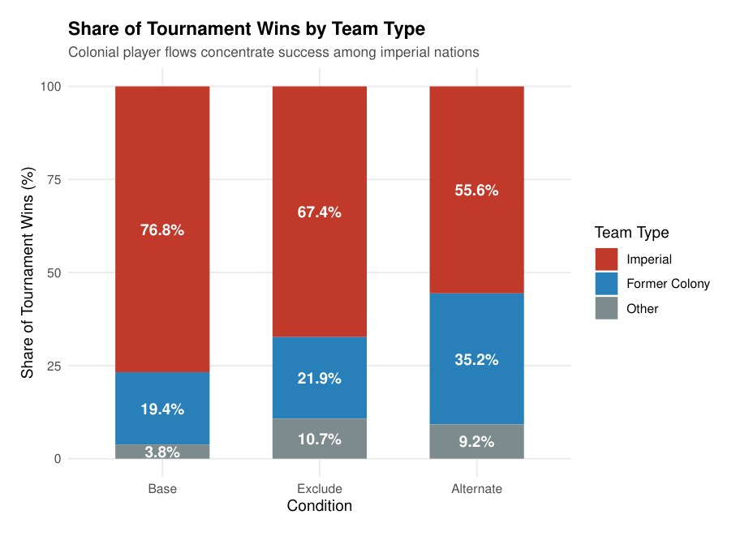
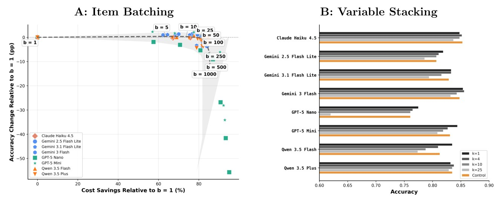
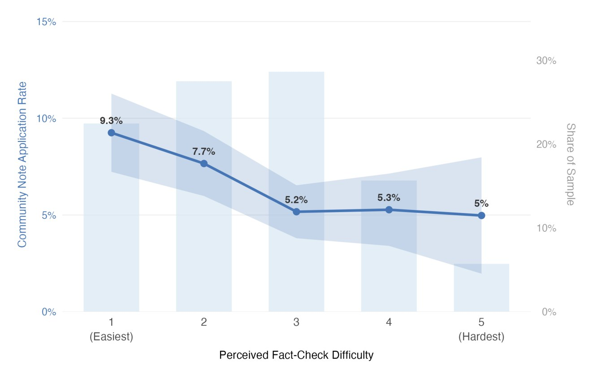
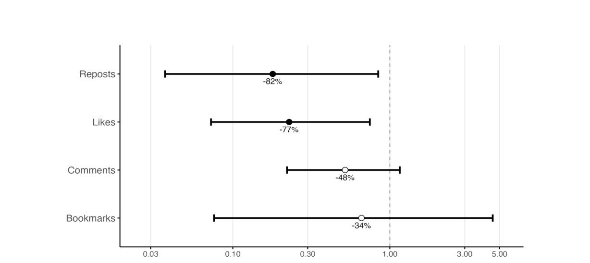
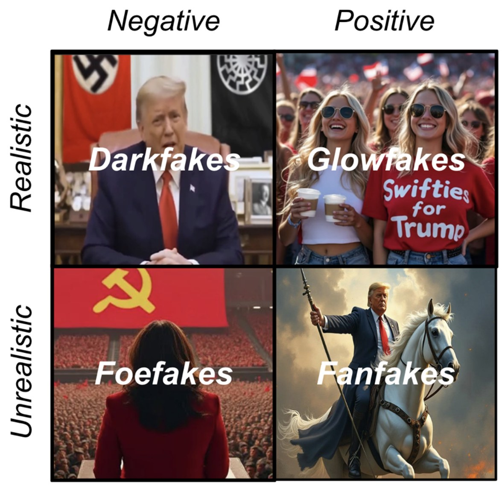

Preprints
Working Papers
Click for Abstract & Key Figure
Some social media influencers (SMIs) occasionally discuss political actors and events, while others regularly engage with political topics. We ask here whether audience response helps explain this difference. We argue that engagement with political posts provides feedback that can reinforce further political posting and, over time, a move toward formal-political content. We test this argument using 761,102 Instagram posts from 1,683 Austrian and German SMIs collected over 60 months (2021–2025), combining a validated two-stage text classification pipeline with within-creator fixed-effects regressions and Cox proportional-hazards models. Political posts receive 18% more likes and 28% more comments than non-political posts by the same creator, although this boost is not larger for smaller creators. A better-performing first political post is followed sooner by another political post. Stronger engagement with lifestyle-political posts also predicts an earlier move into formal-political content, with implications for democracy given the increasing prominence of SMIs as agenda-setters in digital ecosystems. Smaller creators post political content at higher rates. Audience response therefore helps explain why political communication by SMIs persists and how it can move toward formal politics.

Click for Abstract & Key Figure
It is becoming increasingly common to encounter AI-generated text online. Yet at the same time it is often difficult to distinguish authentic text from generative outputs, particularly within shorter posts. Given this conflict, we expect accusations that a text was AI-generated to become a common strategy for deflecting unwelcome arguments. To study the occurrence of these accusations and their impact on online discourse, we draw on posts collected across two years and twelve political Reddit communities to track who is accused, whether accused comments are flagged by detection tools as AI more often, and whether these accusations disproportionately disrupt debates. Consistent with research on motivated reasoning, accusers from across the political spectrum targeted comments which opposed their views at higher rates, 72% of the time against 50% for comparable same-thread comments. AI accusations also disproportionately undermined open debate. Compared to other types of hostile dismissals, we find that substantive engagement falls to 29% (from 67%), with threads often turning to the litigation of a posts' authenticity rather than engaging with its substance. These findings illustrate the growing tendency to indict political opponents as inauthentic, which we call the motivated attribution of inauthenticity, while illustrating how the existence of generative AI can harm political conversations through suspicion alone.

Click for Abstract & Key Figure
Does the evidence generated to answer political questions depend on which large language model (LLM) users query? We introduce the concept of “biased provision” to describe this dependence, which can arise where individual providers differ in how compliant their models are to user requests. Drawing on an audit of four LLMs, four search engines, and two hybrids across 8,249 responses to 30 claims, we find similar average rates of disconfirming evidence, evidence against the claim asked about, across system types but larger differences among LLMs. As further evidence of their unique behavior, all four LLMs answered neutral questions with similar evidence but diverged once users asked for support, whereas search engines narrowed together only after queries included the user's argument. Search engines supplied the least disconfirming evidence under argued requests, providing a baseline for claims of chatbot sycophancy. As political questions migrate from search engines to chatbots, the evidence users receive will no longer depend on the tools people use but on which chatbot's answers users prefer.

Click for Abstract & Key Figure
Misperceptions can run in two directions. Individuals can either believe false information or reject true information, with experimental work finding that debunking efforts are effective at correcting both forms of misperception. Yet despite the efficacy of true corrections, current debunking systems focus almost entirely on the correction of falsehoods, with professional fact-checkers publishing few true verdicts and crowdsourced systems like X's Community Notes program unable, by rule, to display notes verifying true claims. As a result, we do not have a clear understanding of the extent to which overall misperceptions are driven by doubting true information. To answer this question we first draw on a novel dataset of 47,899 queries to X's AI assistant which track users asking for verification on post content. Surprisingly, among questioned posts that received a true or false verdict, Grok judged nearly identical shares as either accurate or inaccurate. Of the questioned posts, more than 83% were not flagged by Community Notes and only 3.3% carried a displayed note. Among questioned posts judged accurate by Grok, nearly 90% received no note at all while fewer than 2% displayed a note flagging them as misleading. This discrepancy does not seem to have stemmed from a lack of effort, with contributors writing 2,981 notes verifying questioned posts despite there being no way for Community Notes to display them publicly. Alongside further exploration of these findings we discuss both the system- and code-level changes that would be required to effectively address this asymmetric correction paradigm.

Click for Abstract & Key Figure
Most Americans say politics should stay out of sports. Yet whether this norm is truly binding depends on whether people apply it when their own side violates the norm. To test this “apolitical sports” norm, we fielded a two-wave matched panel survey around the 2026 FIFA World Cup (N1=988; N2=699). During the tournament, U.S. President Donald Trump called FIFA to have an American player's red-card suspension lifted. We asked respondents to judge the incident directly and to judge a message on players' shirts, varied to support or protest a contentious U.S. policy. Overall, endorsing the norm predicted lower tolerance for political expression in sports, within each party separately, with a smaller own-side advantage. Following this widely reported violation, Democrats raised their endorsement while Republicans did not. What divided partisans most was what they counted as a violation, with Republicans reporting less political interference. In short, while both sides agreed with the norm, they disagreed about whether it had been broken. Our findings suggest that partisan accommodation can influence how citizens recall and conceive of potentially norm-violating events.

Click for Abstract & Key Figure
Large language models (LLMs) have become the first source millions consult when evaluating political claims, yet they were trained on an open internet that state-sponsored disinformation operations have been designed to pollute. We audit four frontier models across 2,268 responses to 63 fabrications from eight documented influence operations and find that even a single published fact-check can shift a model from hedging about a fabrication to rejecting it outright. Overall, models correctly rejected only 81% of fabrications while repeating disinformation in 3% of cases. Critically, the remaining 16% of responses would have left users unable to determine whether an fabricated claims were true or false. Fact-checks may present an avenue for addressing this vulnerability. Narratives which had been debunked by at least one IFCN certified fact-checking organization were correctly rejected as disinformation 93% of the time compared to just 76% of the time for unchecked narratives. Exploratory analyses suggest that this mechanism operates through training data, with models echoing the specific vocabulary of published corrections when available during their training windows. We conclude by discussing how fact-checks designed for human audiences appear to serve as effective protection for LLMs, converting both model uncertainty and outright disinformation into definitive rejections.

Click for Abstract & Key Figure
Short-form video platforms such as TikTok have developed captive audiences vulnerable to the spread of online health misinformation, creating demand for scalable video-based correction strategies. However, little is known about how communicator characteristics and message style jointly shape the effectiveness of debunking videos. Drawing on epistemic trustworthiness and source credibility theory, this study examines whether communicator type (scientist vs. influencer), communicator appearance (human vs. AI), and communication style (neutral vs. emotionalized) influence the efficacy of TikTok-style debunking videos addressing common health misinformation. In a pre-registered experiment (N = 996), participants viewed a misinformation video followed by one of sixteen debunking videos or no correction (control). We assessed perceived accuracy of the misinformation, epistemic trustworthiness of the communicator, credibility of the debunking content, and sharing intentions. Both human and AI-generated debunking videos significantly reduced belief in misinformation relative to control (~25% reduction), with no significant difference between them. However, human communicators were rated as more credible and trustworthy across all dimensions and elicited stronger sharing intentions among participants than AI-generated communicators. This disadvantage for AI was moderated by individual differences, with participants high in deference toward AI showing no additional preference for human communicators. Communicator type and communication style had no effect on the outcomes. These findings reveal a dissociation between belief change and source evaluation: AI-generated corrections may scale and be functionally effective, but deficits in perceived trustworthiness and sharing intentions may limit their diffusion on social media platforms.

Click for Abstract & Key Figure
European empires extracted vast resources from their colonies and continue to benefit from these legacies today. We examine an under-researched domain of this advantage: international football. Drawing on the literatures on colonial labor extraction, the “muscle drain” in global sports, and cumulative causation, we argue that colonial migration pipelines channel football talent from former colonies to former imperial powers, generating self-reinforcing competitive advantages. We test this argument using approximately 1,500 simulations of the (currently upcoming) FIFA World Cup 2026 tournament in Football Manager under three roster conditions: actual rosters, rosters with colony-background players redistributed to their ex-colonial “heritage nations,” and rosters with colony-background players removed entirely. We identify 49 colony-background players across six European teams. All four pre-registered hypotheses find support. Former colonizer countries perform significantly worse without colony-background players and formerly colonized countries perform significantly better when they receive them. We also predict the World Cup 2026 results under each condition. France has the highest probability of winning the tournament with actual rosters in our simulations. However, it fields 17 colony-background players and sees its World Cup win rate nearly halve under redistribution of these players, while Brazil's prospects double. Former colonizer teams collectively account for over three-quarters of simulated tournament wins under actual rosters but lose more than 20 percentage points of that share when colony-background talent is redistributed. This study demonstrates that colonial legacies continue to shape competitive outcomes in international football, with consequences for the financial rewards, cultural prestige, and soft power that accompany World Cup success.

Click for Abstract & Key Figure
Large language models (LLMs) are increasingly being used for text classification across the social sciences, yet researchers overwhelmingly classify one text per variable per prompt. Coding 100,000 texts on four variables requires 400,000 API calls. Batching 25 items and stacking all variables into a single prompt reduces this to 4,000 calls, cutting token costs by over 80%. Whether this degrades coding quality is unknown. We tested eight production LLMs from four providers on 3,962 expert-coded tweets across four tasks, varying batch size from 1 to 1,000 items and stacking up to 25 coding dimensions per prompt. Six of eight models maintained accuracy within 2 pp of the single-item baseline through batch sizes of 100. Variable stacking with up to 10 dimensions produced results comparable to single-variable coding, with degradation driven by task complexity rather than prompt length. Within this safe operating range, the measurement error from batching and stacking is smaller than typical inter-coder disagreement in the ground-truth data.

Click for Abstract & Key Figure
Crowdsourced moderation systems like Twitter/X's Community Notes program have been proposed as scalable alternatives to professional fact-checkers for combating online misinformation. While prior research has examined the effectiveness of such systems in reducing engagement with false content and their vulnerability to partisan bias, we identify a previously untested mechanism linking fact-check difficulty to systematic non-participation by crowdsourced raters. We hypothesize that claims requiring less cognitive effort to evaluate, specifically, those that are obviously false and easy to refute, are more likely to receive public notes than claims that are more plausible and require greater effort to debunk. Using eighteen months of vaccine-related Community Notes data (2,250 posts) and ratings from 382 survey participants, we show that claims perceived as more difficult to fact-check are significantly less likely to receive notes that achieve "helpful"/public status. Following the conduct of additional analyses and a fact-checking process utilizing an LLM pipeline to help rule out alternative explanations, we interpret this pattern as consistent with an unwillingness among raters to invest the mental effort required to evaluate and rate notes for more plausible misinformation. These findings suggest that crowdsourced moderation may systematically fail to address the forms of plausible misinformation which are most likely to deceive. We discuss implications for platform design and propose mechanisms to mitigate this difficulty penalty in crowdsourced content moderation systems.

Click for Abstract & Key Figure
False information can erode democratic legitimacy and incite violence. Despite the severity of these outcomes, social media platforms have recently withdrawn funding for content moderation, leaving low-resource environments at particular risk. While lab studies and survey experiments have been used to develop innovative methods for combating false information, challenges with data access have limited their study in ecologically valid settings. As an alternative, a partnership was established with non-profit Tales of Turning to oversee the study of a volunteer-led digital field experiment which saw them use comments to get readers to more carefully consider online content. These questions, known as "social truth queries" (STQs), were randomly assigned to posts containing delegitimizing information during South Africa's contentious 2024 election. Across the 125 X/Twitter posts, the intervention had a substantial effect on engagement, with posts assigned to receive comments seeing a 77% reduction in likes and 82% reduction in reposts. Critically, the effect of the intervention was dependent on its timing, with the impact largest when STQs were applied quickly. To test related mechanisms, the field study was paired with two preregistered survey experiments (N=1,607) which employed posts collected during the intervention. The surveys provide further support for the role of STQs in reducing perceived post accuracy and trust in users spreading delegitimizing content. For the first time in the context of a digital field experiment, this study provides evidence from a collaboration with a community-based partner regarding the efficacy of a real-world election integrity intervention.

Click for Abstract & Key Figure
Research on political deepfakes disproportionately focuses on malicious applications – disinformation designed to damage reputations or deceive voters. This focus on deception, while important, creates a blind spot: most political deepfakes do not fit the paradigmatic case of scandal-invoking content. Without a systematic framework for understanding deepfake functions, scholars cannot assess risks, policymakers cannot develop targeted responses, and we lack insight into how synthetic media reshapes political communication. We offer a typology organized around five dimensions: Content, Design, Intentionality, Disclosure, and Dissemination (CoDIDD). We also introduce a classification scheme: "darkfakes" (realistic/negative), "glowfakes" (realistic/positive), "fanfakes" (unrealistic/positive), and "foefakes" (unrealistic/negative). We ground our typology in data from the Political Deepfakes Incidents Database and apply it to deepfakes from the 2024 US presidential election, revealing patterns obscured by existing approaches. By establishing categories for measurement and comparison, our typology facilitates interdisciplinary dialogue and provides a foundation for evidence-based governance.
